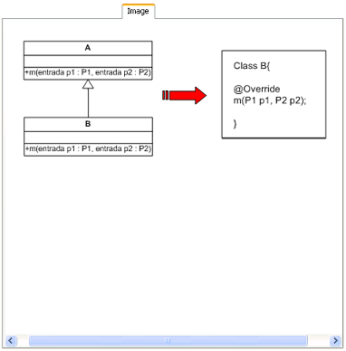

Panel de resumenPanel de resumen
Panel de resumenPanel de resumen
El panel Summary Panel se sitúa en la zona derecha de la vista y se muestra cuando una refactorización es seleccionada y se hace doble clic sobre ella en el árbol que representa el catálogo de refactorizaciones. Este panel de resumen esta destinado a la visualización de la información asociada a una refactorización y consta de una etiqueta en la que indica la refactorización de la que se muestra la información y una serie de pestañas en las que se encuentra repartida la información asociada a la misma. Siempre aparecerán tres pestañas; Overview, Inputs y Mechanism y también podrán aparecer hasta dos pestañas adicionales que corresponden con Image y Examples, en caso de que la definición de la refactorización disponga de esta información añadida.
Se trata de la primera pestaña del panel Summary Panel y corresponde con la vista general de la refactorización seleccionada. Esta contiene la descripción, la motivación, las categorías a las que pertenece y las palabras claves que definen a la refactorización.
Se trata de la segunda pestaña del panel Summary Panel y corresponde con las entradas definidas para la refactorización que se encuentra seleccionada. Estas entradas aparecen representadas mediante filas en una tabla y se dispone de ellas el nombre, el tipo de entrada, a partir de donde se obtiene el valor o valores posibles, y un indicador de si se trata de la entrada principal.

Se trata de la tercera pestaña del panel Summary Panel y contiene los mecanismos definidos para la refactorización seleccionada, es decir, la lista de precondiciones, acciones y postcondiciones.
Se trata de una pestaña opcional del panel Summary Panel y muestra la imagen representativa de la refactorización seleccionada, la cual ha sido incluida en la definición de la misma. En caso de que no haya una imagen disponible la pestaña no aparecerá, de ahí que sea opcional.

Se trata de la última pestaña que puede aparecer en el panel Summary Panel y también se trata de una pestaña opcional. Es la encargada de mostrar los enlaces o links a los ejemplos disponibles para la refactorización que ha sido seleccionada.
Para poder visualizar estos ejemplos bastará con pulsar sobre el link del ejemplo elegido y acto seguido aparecerá una ventana en la que se mostrará por una parte el código fuente del ejemplo antes de aplicar la refactorización y por otra el código fuente resultante de aplicar la refactorización.